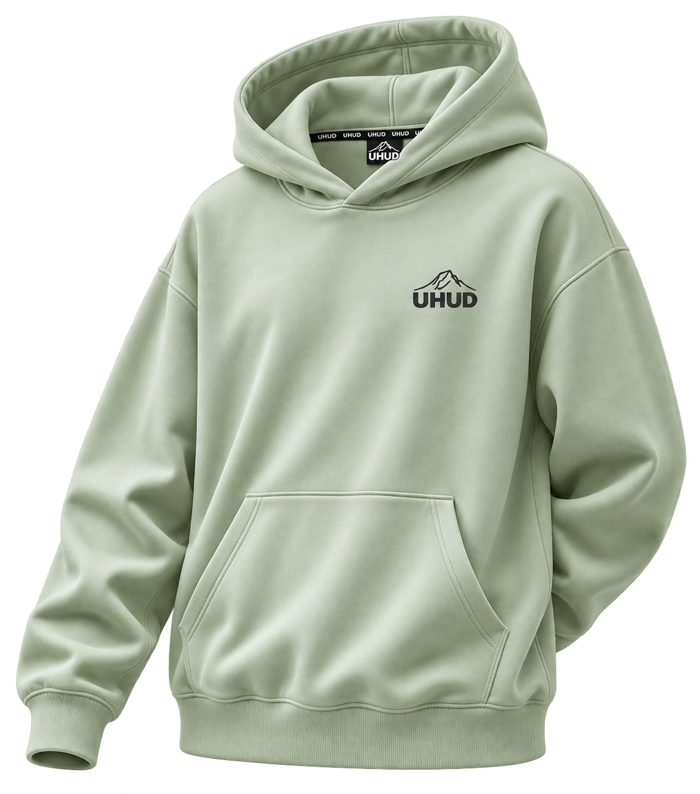
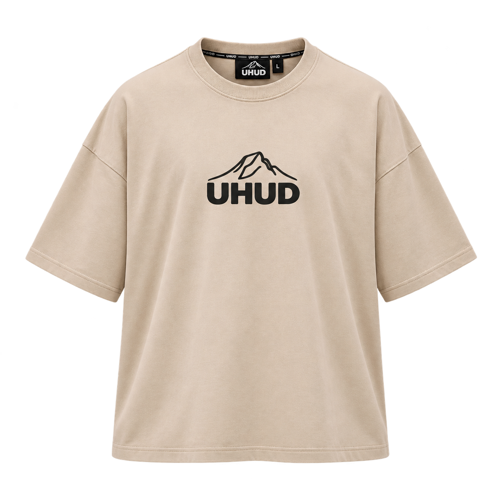
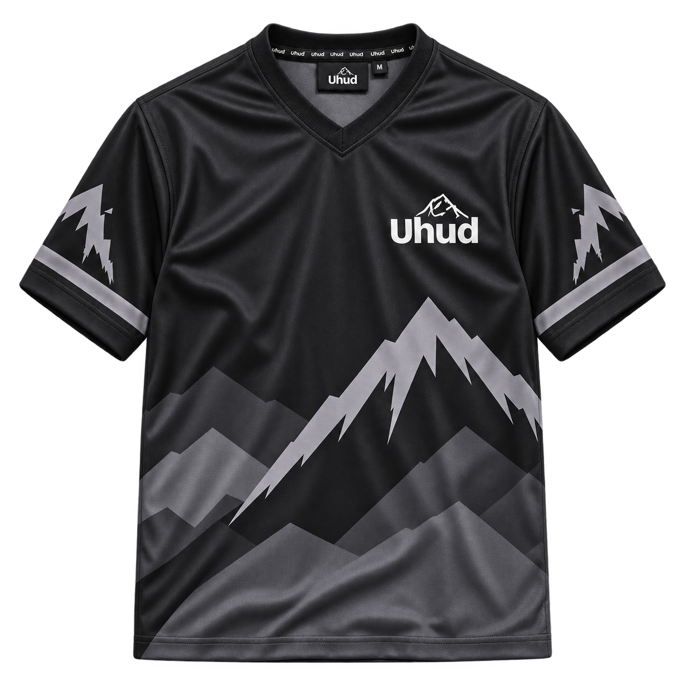
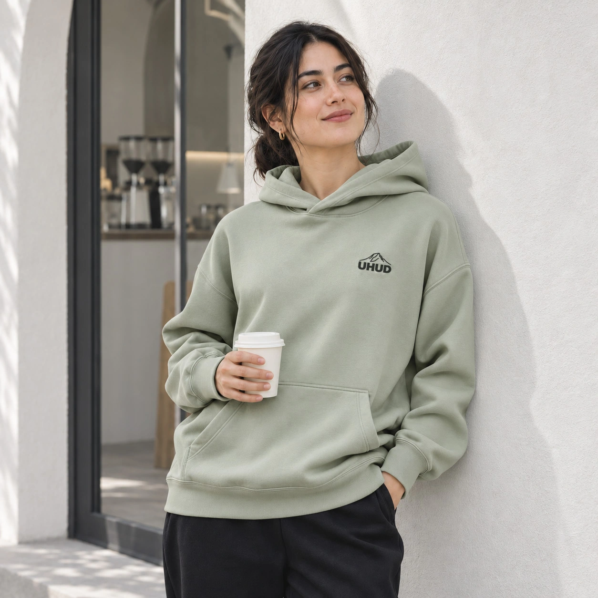
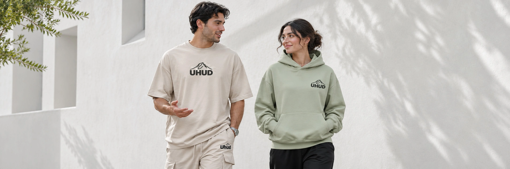
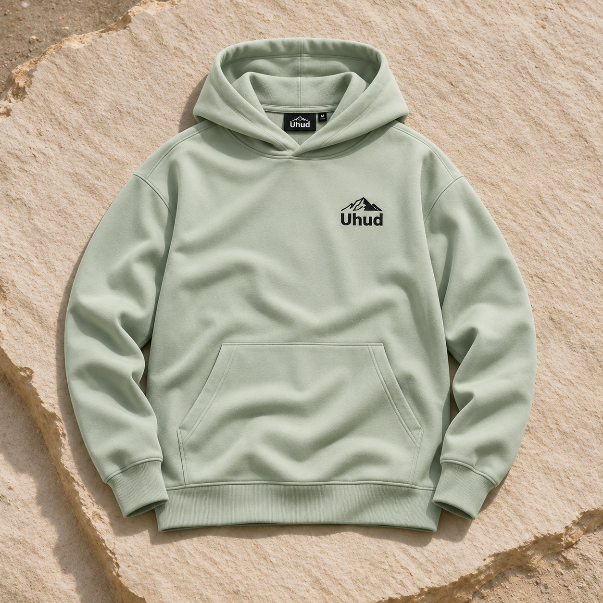

Build recognition
Create a consistent look that makes UHUD easy to recognize.
01 / SOCIAL MEDIA BRANDING PROPOSAL
A consistent visual identity, brought to life through product posts, styling carousels, Reels and Stories.
Explore the social concepts →


02 / BRAND OVERVIEW
Relaxed silhouettes. A grounded palette. A signature that feels unmistakably UHUD.
01 — SILHOUETTE & COLOR
An easy silhouette with a quiet statement. The sage hoodie anchors the brand’s soft, natural palette.
02 — THE BRAND PALETTE
The UHUD mountain mark.
A common thread across the collection.
03 / OUR OBJECTIVES
Help people recognize UHUD, understand the collection, and take the next step toward a purchase.
Create a consistent look that makes UHUD easy to recognize.
Show how the collection fits into everyday outfits.
Make fit, product details and ordering information clear.
Guide interested viewers toward an enquiry or purchase.
04 / OUR AUDIENCE
Designed for people who prefer relaxed fits, understated colors, and versatile everyday outfits.
Relaxed fits and understated colors.
Coffee runs, casual meetups and weekends.
How it fits, how to style it and how to order.


Relaxed fits and understated colors.
For coffee runs, casual meetups and weekends.
06 / STATIC POST DESIGNS
uhud Message us for sizing.
Make the next step clear.
uhud A signature in every piece.
Bring the mountain artwork into focus.
uhud The sand cargo overalls.
Show how the pieces work together.
UHUD / COLLECTION CAROUSEL
Explore the clothing-only series. Select a thumbnail or swipe to see each piece.

1 / 4Sage hoodie
08 / REELS & STORIES
Proposed short-form concepts that bring the collection closer.
9:16 MOBILE CREATIVE · Tap the poll or explore a storyboard below.
One tee. Three looks.
Get closer to UHUD.
Choose your everyday look.
Try the poll concept. Your choice stays in this preview.
STORYBOARDS AND INTERACTION CONCEPTS · FINAL VIDEO PRODUCTION IS PART OF THE PROPOSED PILOT
10 / DELIVERABLES & NEXT STEPS
Proposed four-week pilot — confirm the scope and production needs before work begins.
Capture review notes before confirming the pilot.
05 / SOCIAL MEDIA DIRECTION
One identity.
Across every post.
A cohesive feed of product details, everyday styling and clear shopping information.
uhud
Everyday style. Your way.
Relaxed fits. Grounded colors. Signature details.
Message us for sizing and ordering.
INTERACTIVE FEED · SELECT A POST TO EXPLORE ITS CONCEPT · PROPOSED CREATIVE, NOT LIVE POSTS